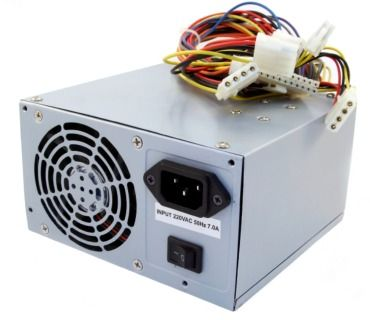
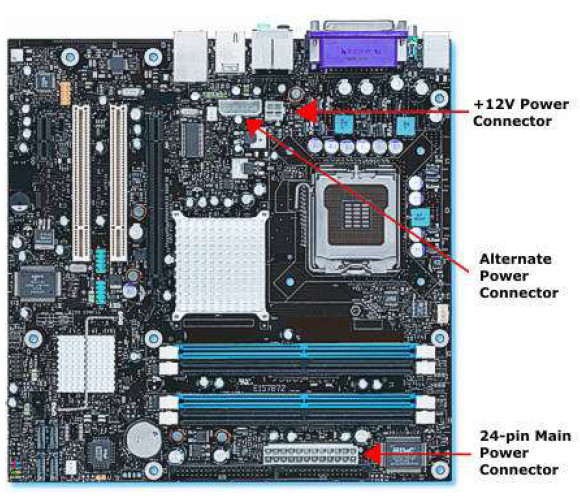
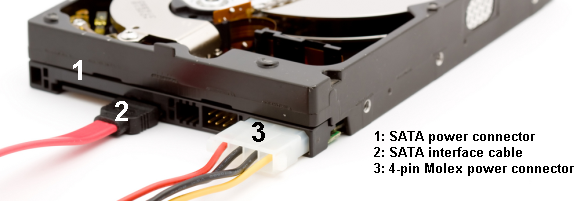

De voeding
De specificaties van een doorsnee pc-voeding geven aan dat de voeding niet alleen +3,3 V, +5 V en +12 V levert, maar ook -12 V. Oudere voedingen leverden daarnaast -5 V. Die spanning is uit de standaard verdwenen, en op de tekening van de 24-pins connector verderop staat op die plaats dan ook N/C: niet aangesloten.

De negatieve spanningen spelen slechts een heel beperkte rol. Negatieve spanningen werden vroeger gebruikt in oude diskettestations maar vandaag de dag blijft dit beperkt tot de, op het moederbord geïntegreerde, seriële poorten als deze al aanwezig zouden zijn. Bij een industriële computer kan dit wel nog eens het geval zijn, bij een gewone computer niet.
De voeding wordt gebruikt om het moederbord en alle overige componenten te voorzien van voldoende spanning en stroom. Daarvoor zijn meestal één, twee of zelfs nog meer aansluitingen aanwezig op het moederbord. Extra aansluitingen zijn vaak nodig zodat er meer vermogen kan stromen naar het moederbord en bijgevolg één van de meest stroomvretende apparaten: de processor.

Uit de voeding komen heel wat kabels die verzameld zijn in groepjes, elk met een connector op het uiteinde. Eén van de belangrijkste is degene die op het moederbord wordt aangesloten: de 24-pins ATX-connector. De vierpolige stekker waarmee randapparaten gevoed worden, is een andere en heet een Molex-connector.
![Tekening van de 24-pins ATX-connector, met de pinbezetting in twee kolommen van twaalf. Links pin 1 tot 12 van boven naar onder, rechts pin 13 tot 24, elk als een gekleurd vierkant met zijn functie ernaast. De bovenste tien rijen vormen samen het blok van twintig pinnen, met halverwege de vergrendeling aan de rechterkant; daaronder hangt met een stippellijn het aparte blokje van vier. Links staan twee keer +3.3V, COM, +5V, COM, +5V, COM, PWR_OK, +5VSB en +12V1, en in het blokje van vier +12V1 en +3.3V. Rechts staan +3.3V, -12V, COM, PS_ON, COM, COM, COM, N/C, +5V en +5V, en in het blokje van vier +5V en COM.](../../../../img/syllabus-16-atx-connector.svg)
Er zijn twee uitvoeringen van deze connector: één met 20 pinnen en één met 24 pinnen. Deze met 24 pinnen is de meest recente en levert meer stroom op de lijnen van 12 V, 5 V en 3,3 V.
Ook op SATA harde schijven is plaats voorzien om ze te verbinden met de voeding. Harde schijven met een M.2 aansluiting worden rechtstreeks op het moederbord gemonteerd.

Voedingen verschillen ook in hoe die kabels vastzitten. Bij een niet modulaire voeding komen alle kabels vast uit de behuizing, ook de bundels die je in deze computer niet gebruikt: die blijven ergens in de kast liggen en zitten de luchtstroom in de weg. Bij een modulaire voeding zitten de aansluitingen op de voeding zelf en steek je alleen de bundels in die je nodig hebt. Daartussen bestaat de semi modulaire voeding, waarbij de 24-pins ATX-connector en de kabel naar de processor vast zitten en de rest los is. Modulair bouwt netter en kost meestal wat meer.
Wie een voeding wil aankopen moet met twee zaken rekening houden: de vormfactor en het gewenste vermogen. De vormfactor bepaalt of de voeding in de kast past, en bij een desktop is dat bijna altijd ATX. Het vermogen is uiteraard afhankelijk van de componenten die je in een computer gaat plaatsen. De grootste verbruikers zijn de processor en de grafische kaart.
Een Intel Core i7 8700K Coffee Lake verbruikt bijvoorbeeld maximaal 95 watt terwijl een Intel Core i3 8100 Coffee Lake slechts maximaal 65 watt verbruikt. Deze gegevens kan je terugvinden in de datasheet van de processor maar ze staan ook veelal vermeld in de productspecificaties wanneer je online zou bestellen.
Een bescheiden MSI GeForce GT710 2GB heeft een voeding nodig die minstens 300 watt kan leveren terwijl een Asus GeForce Strix GTX 1080 A8G Gaming een voeding nodig heeft van minstens 500 watt. Gebruik je geen externe grafische kaart dan hoef je hier uiteraard geen rekening mee te houden gezien je dan de ingebouwde grafische processor zou gebruiken van de CPU.
Die 500 watt is wel een aanbeveling voor de HELE computer en niet voor de kaart alleen, dus je mag ze niet optellen bij het verbruik van de processor. Reken daarom met wat de onderdelen zelf verbruiken: 95 watt voor deze processor en zo'n 180 watt voor de GTX 1080.
Ook het moederbord, het geheugen, de harde schijven, de USB apparaten en de ventilatoren nemen een bepaald vermogen op. Reken hiervoor op zo'n 100 watt. Samen kom je zo op ongeveer 375 watt op het drukste moment. Daarnaast halen de meeste voedingen hun beste rendement wanneer je hen maar voor de helft belast, dus indien het budget het toelaat kies je ruimer: voor deze machine is dat een voeding van 750 watt.
In de industrie stopt het daar niet. Valt de netspanning weg, dan valt een gewone computer meteen uit, en een machine die halverwege een beweging stilvalt kan schade maken. Daarom hangt er vaak een UPS tussen, een Uninterruptible Power Supply. Dat is een voeding met een batterij erin: zolang het net er is, voedt ze de computer en houdt ze die batterij vol, en valt het net weg, dan neemt de batterij het over zonder dat de computer er iets van merkt.
Zo'n batterij houdt het niet lang vol, en dat hoeft ook niet. Ze moet de computer genoeg tijd geven om de machine gecontroleerd stil te leggen en zichzelf daarna netjes af te sluiten. Een UPS meldt de stroomuitval daarom aan de computer, zodat die de shutdown zelf kan starten.